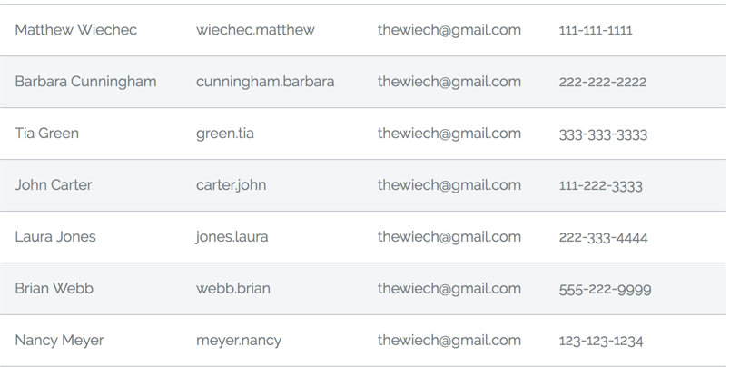

<div class="welcome-banner">
    <div class="container">
        <div class="row">
            <div class="col-12 primary-text">
                An open source Angular 4 grid
            </div>
        </div>
        <div class="row">
            <div class="col-12 secondary-text">
                Easily display a modern fully customizable grid with enterprise quality features in your applications
            </div>
        </div>
    </div>
</div>
<div class="container">
    <div class="row mw-bootstrap-row">
        <div class="col-sm-12 col-md-6">
            <h4>Basic Features</h4>
            <ul>
                <li>Dom Virtualization (Under development)</li>
                <li>Pagination and infinite scroll (Under development)</li>
                <li>Custom cell templates (Under development)</li>
                <li>Dynamic column sizing (Under development)</li>
                <li>Sorting (Under development)</li>
                <li>Searching (Under development)</li>
            </ul>
        </div>
        <div class="col-sm-12 col-md-6">
            
        </div>
    </div>
</div>
